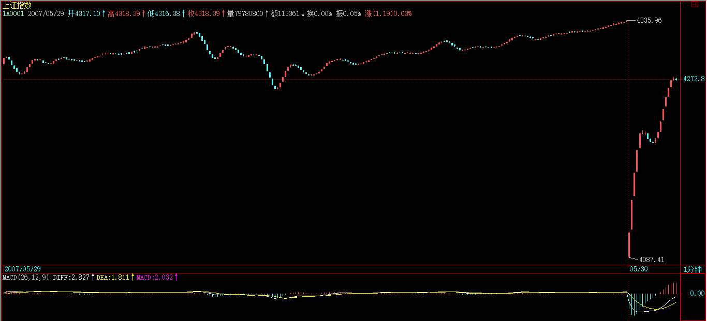

(2007-05-30 22:49:10)
本来不想说股票的，但知道现在说其他，大多数人也反应迟钝，被股票所迷惑了，所以还不如将错就错，就继续股票一把，说说昨天这530印花税当日行情如何去当下地分析。【韶山映山红】新浪博客显示，这篇博文的发表时间是(2007-05-30 22:49:10)，530的当天晚上，为什么缠师说530是“昨天”？“昨天这530印花税当日行情如何去当下地分析”？★以后研究。】
【韶山映山红】若禅精舍（陈秋明）：
2008年以后参与到股市中的人可能对此没有概念。2007年5月，已经从两年前的998点涨到了4500点附近，为了给股市降温，其实主要是防范大量杠杆引起的短期借贷过高造成金融风险，给印花税的征收比例提高了百分之三百，从千分之一提高到了千分之三。
这样的成本其实并没有增加多少，即使对于短线来说，千分之二的成本问题也不大，但同样的话要看怎么表述，例如说一个稀罕的一分钱硬币，说涨到了1.5元一个，我们都没什么感觉，但要说上涨了150倍，那就吸引人了。这印花税的百分之三百也是一样，但更重要的是这是一个信号，是某个层面开始压制股市上涨势头的信号。消息公布后，引起的恐慌使沪指当下最低下跌了7%多，并在随后的几天累积下跌了1000个点位，一周内从4335下跌到最低点3400.】
本来这个问题十分简单，而且本ID一大早7点不到就发帖子提醒要在第二、三卖点把仓位减掉，【韶山映山红】从容面对突发事件是投资的基本素质 (2007-05-30 06:53:34)】很高兴看到不少人都能发现9点48那第二类卖点。

注意，为什么同时强调第三类卖点，因为有些特别弱的股票，可能就是一个第三类卖点，【韶山映山红】大盘之前是进入背驰段的状态，“特别弱的股票”“是一个第三类卖点”，说明“特别弱”不是指跟随大盘的滞后，而是指已经提前背驰甚至已经转折，或者干脆就一直是盘整、就没有好好涨过的情况。】大盘的走势是一个平均走势，而且当天比很多个股都强，所以大盘是第二类卖点，并不意味着个股是第二类卖点。【韶山映山红】之前是涨的情况，之后就是抗跌的情况了。买卖不同构，涨跌也不同构。】
很多人大概到现在都不明白为什么本ID的理论中要有三类卖点，其实，第二类卖点除了在小级别转大级别上比第一类卖点优越，在一些特殊的突发情况下，就是最佳的卖点。【韶山映山红】二卖在两个场景中的应用比一卖更有优势：小转大带来的暴跌，突发情况带来的暴跌。】换句话说，转折并不是都有图形上的背驰，“在一些特殊的突发情况下”，不但没有大级别的背驰，小级别背驰也没有。】
【韶山映山红】买卖不同构。小转大的情况，二卖比一卖优越，因为一卖无法操作。小转大的情况，二买却并不比一买优越，因为无法判断会有一个涨势。二卖图的是个安全，二买就有些冒进了，三买确认小转大再介入才是优选。】
例如这次，就是一个很好的例子。【韶山映山红】这次的第二类卖点，，没有小级别背驰不是“小级别转大级别”，而是“特殊的突发情况”，操作的判断方法有两个：１，开盘前的大势的基本面分析，这里是印花税的半夜鸡叫。２，开盘后的技术分析，跳空缺口以及随后的下跌破坏了什么样的走势，就对应的操作。】
因为529那天，虽然30分钟明显进入背驰段，
【韶山映山红】30分钟K线图上的笔中枢的趋势，形成三买，趋势背驰，跌回趋势的最后一个中枢区间，本级别转折。按照29课的分类，后面将是30分钟以上级别的反趋势或者日线以上级别的盘整。事实上，走出的第一段是30分钟的向下盘整走势。★】
【韶山映山红】5分钟线段中枢的趋势。和30分钟笔中枢的走势基本一样。】

【韶山映山红】下图是1分钟的线段中枢递归的5分钟走势。缠师所说的“5月8日到5月21日构成的30分钟中枢”，在1分钟线段初始化递归的系统中变成了5分钟中枢，而且缠师所说的“5月8日到5月21日构成的30分钟中枢”的进入段和离开段，在1分钟线段初始化递归的系统中分别变成了一个5分钟级别中枢。也就是说，419以来，缠师原来的30分钟上涨的最后一个30分钟中枢及其进入段、离开段，在1分钟线段初始化递归的系统中是一个三中枢的5分钟上涨趋势。】

【韶山映山红】整个6124的上涨行情是30分钟级别的趋势。】
但由于当天尾盘是高收的，所以用区间套定理并不能确认当时就是背驰了，毕竟还有第二天的走势。【韶山映山红】1分钟图上的线段中枢盘整背驰，没有出现三买，还不足以判断1分钟趋势背驰。】
而晚上的突发消息，使得这个背驰被立刻确认，【韶山映山红】30分钟离开中枢，已有大级别的背驰段，只缺区间套的小级别确认的背驰点。“晚上的突发消息”意味着，不管市场反应是什么样子，都会有小级别的转折，也就是说，总会满足区间套的结果，所以“使得这个背驰被立刻确认”。】
这时候，第一类卖点已经不可能在实际操作中存在，【韶山映山红】“背驰被立刻确认”不是因为小级别背驰，而是基本面的突变带来的断崖式跳空下跌，所以并没有真正的区间套来当下确认第一类卖点，也就不存在可操作的第一类卖点。】
那么，唯一可以进行操作的，只能是第二或第三类卖点。【韶山映山红】没有区间套的本级别背驰，也没有小转大的小级别背驰，这里讲述的是趋势转折的第三种情况：无背驰转折。原文没有对这种情况展开讲解。】
这，在开盘前就可以有一个确定，【韶山映山红】530是突发情况导致的无背驰转折，如果没有这样大的突发情况，也会有无背驰转折的现象吗？或者说，多大的突发情况会导致无背驰转折？在开盘前如何预测？★以后研究。】
也就是说，一旦大幅度低开，现实的、能被理论完全保证的卖点就是第二类或第三类卖点。【韶山映山红】利空消息出现后，开盘前的分类：１，没有影响，延续原走势。２，小影响，原走势背驰，转折。３，大影响，原走势小转大，转折。４，巨大影响，原走势没有背驰，直接跳空转折。】
【韶山映山红】如果之前在中枢里，甚至在中枢下，就会直接走出三卖。如果之前在中枢上运动，一旦大幅度低开，直接跌穿中枢，还可能出现二三卖重合的情况。】
【韶山映山红】缠师这一张配图的MACD参数是(24，52，9)而不是默认的（12,26,9）。长线和短线参数放大了一倍，而二次均线的参数9没变。调整MACD参数时应该如何组合，可以做个专题，以后研究。★★★】

教你炒股票56：530印花税当日行情图解
上图就是昨天走势的1分钟图。
缺口，被看成最低级别的，而1分钟以下级别，在1分钟图上，被看成没有内部结构的线段，所以缺口和1分钟以下级别在1分钟图上是同级别的。【韶山映山红】这里说的是，缺口的级别比1分钟以下级别更低，只是在1分钟图上不再关注更低级别的细节，所以当成同级别处理。由此我们是否可以推论，在任意级别做分析的时候，次级别和更低级别的走势都可以处理成“没有内部结构的线段”？★★★特殊笔＼特殊段＼特殊走势类型，可以做个专题，以后研究。★】
【韶山映山红】也就是说，在1分钟图上，低级别的走势，不管级别多么低，不管级别一样不一样，统统视为同一个级别的次级别。 换句话说，在30分钟图上，也可以把1分钟笔级别、1分钟线段级别、1分钟走势类型级别，统统视为同级别的没有内部结构的5分钟走势？ 唯一的问题就是，什么样的更低级别视为一个没有内部结构的5分钟走势？什么样的更低级别被无视？ 如果都比照跳空缺口的单独成笔、单独成段的处理方法呢？可以做个专题，以后研究。★】
图上绿尖头都指着两个1分钟以下级别的分界点，两相邻绿箭头之间都是1分钟以下级别的走势类型。【韶山映山红】级别不是重点，重点是，都是走势类型。】
其中B段，看似要形成3个1分钟的中枢，但由于每一个的第三段其实都是向下倾斜下去的，其实都是第二段向下的一部分，不能算是形成中枢。【韶山映山红】“其中B段，看似要形成3个1分钟的中枢，”也就是说，如果B段这三个“算是形成中枢”，B段就成为1分钟走势类型。然后在57课说这三个是“似乎可以看成是一线段”，也就是说，因为推出线段的概念，顺便把级别降了一级。那么，为什么要推出线段的概念呢？★可以做个专题。以后研究。】
【韶山映山红】如果B段形成了1分钟的中枢，这个中枢并不是“1分钟以下级别的走势类型”重叠构成的，而是更低级别的三笔重叠构成的，那么，这样的1分钟中枢，和ABC三段构成的中枢，算是一个级别吗？★可以做个专题。以后研究。】
【韶山映山红】如果B段形成了1分钟的中枢，那么B段就是1分钟下跌趋势，这种情况下，A、C段怎么处理？是独立成段？还是被高级别的B段兼并？★可以做个专题。以后研究。】
昨天走势其实就这么简单，就是5个1分钟以下走势类型的组合。【韶山映山红】1个跳空缺口，4个1分钟以下级别的走势类型。】
【韶山映山红】原文配图：1A0001.jpg（2007-05-30 22:43）】

教你炒股票56：530印花税当日行情图解
【韶山映山红】若禅精舍（陈秋明）：
级别，是对走势的一项强制规定。很多人说搞不懂级别，其实那些5分钟、30分钟之类的，都是用来给符合某种复杂程度的走势一个可辨识的称谓而已，例如一段5分钟级别走势，换个说法叫量子纠缠级别，那段走势仍然是那段走势，并不会有任何变化。
那么在一个整体的文章或者论述中，为了增加辨识度，就要有一个统一的级别系统，否则前面叫5分钟级别，后面同样的走势叫30分钟级别，那就乱套了，级别的作用就是使其不会乱套。
这里说的一分钟级别，和后面说的线段，其级别系统就不同。按这里的级别规定，一些复杂的一分钟级别线段都可以按此标准递归出5分钟中枢来。但这些标准都是人为的，与走势无干，就好像量身高的不同工具一样，不管是以米为单位，还是以英寸为单位，抑或以光年为单位，你的身高并不会变化，描述的都是同样的东西。】
显然，这第一段的1分钟以下级别走势类型是以向下缺口的形成构成的，根据第二类卖点的定义，就知道，一旦一个1分钟以下级别的向上过程不能创新高或背驰，都将构成第二类卖点。【韶山映山红】前面的走势已经离开中枢，“30分钟明显进入背驰段”，之后的走势就不能再回中枢了，否则就是对前走势的破坏。低于次级别的返回也不行，也就是说，之后以什么级别返回中枢、同级别的反弹离开不能创新高或新高盘背，都将构成中枢级别的第二类卖点。★】
因此，当图中A段走势出现时，一个构成第二类卖点的走势就当下地形成中。【韶山映山红】这里的问题不在于是否二卖，而在于级别。这个二卖的级别明显的低于前面向上的走势类型，当下是否操作，就成了问题。 而且跳空缺口返回前中枢，然后线段级别再次离开，离开的级别大于返回的级别，虽然都是1分钟以下级别，但毕竟返回、离开的级别不对等。】
【韶山映山红】类似于强三买，这种情况可以定义为强二卖：虽然是很低级别的下跌，却返回了最后一个中枢，所以本级别也要操作。以后研究。★】
【韶山映山红】扫地僧读缠札记：这段话很容易误解，这其实就是因为缺口的原因，如果没有缺口，而是由一个1分钟的段跌到了A的起点，那么这个二卖就非常标准和清晰。这里重点强调的是，向下的跳空缺口之后，只要出现一个向上段不新高，就是二卖。】
有人可能有疑问，那怎么知道这A段一定构成第二类卖点而不是直接创新高强烈上升，这很简单，具体的方法和区间套定理是一样的，就是看A段的内部结构，一旦内部出现背驰而当时位置没创新高或与前面走势产生盘整顶背驰，那么就一定是第二类卖点。【韶山映山红】0-1段跳空向下之后反弹，1-2段“内部出现背驰”，意味着1-2段走势结束，要转折向下了，而此时1-2段整体“位置没创新高或与前面走势产生盘整顶背驰，”从而做出判断。这里的关键是正确判断1-2段的结束。】
【韶山映山红】没创新高，或者创新高而与前面走势产生盘整顶背驰，都是二卖。也就是说，只有非背上涨才能摆脱。】
【韶山映山红】这里看上去就是实盘操作的指导，其实有问题。A段内部出现背驰而当时位置没创新高或与前面走势产生盘整顶背驰，那么就一定是第二类卖点。但是，线段级别的盘背区间套，这个二卖只是1分钟级别的，530要跑路的理由并不是因为出现了这个二卖。恰恰相反，这里是先决定跑路，大级别的跑路，然后在小级别的细节上，寻找一个更有技术含量的卖点。而且，这里也不能保证就是最佳卖点，A段走势的3段盘整之后演化成5段盘整的也完全没有问题。当然，已经要跑路了，能走成这样，已经谢天谢地了。】
【韶山映山红】这里是原文的第四个“盘整顶背驰”。
“与前面走势产生盘整顶背驰”，这里说的“前面走势”是谁？
“与前面走势产生盘整顶背驰”对应的另一种情况是“当时位置没创新高”，可见，“与前面走势产生盘整顶背驰”是创新高的情况。Ａ段前面是向下的跳空缺口，那么，创新高，只能是，比跳空之前的背驰段还要新高。所以，“前面走势”就是530之前的上涨。
再翻到前面看原文，“因为529那天，虽然30分钟明显进入背驰段，但由于当天尾盘是高收的，所以用区间套定理并不能确认当时就是背驰了，毕竟还有第二天的走势。”
现在我们就可以连贯起来了：30分钟进入背驰段，还不能区间套确认背驰，突发消息带来向下的跳空缺口，使得这个背驰被立刻确认。然后是Ａ段反弹，如果新高，却有某种背驰，就是“与前面走势产生盘整顶背驰”。
为什么不是“趋势背驰”而是“盘整顶背驰”？因为没有区间套的背驰？★以后研究。】
“与前面走势产生盘整顶背驰”，也就不会有趋势延伸的中枢移动了。】
在昨天的具体走势中，A段在内部出现上下上的内部结构时，其中的第二段向上明显出现背驰走势，这可以成交量，【韶山映山红】这里提到了成交量对背驰的辅助判断。价格新高，却量缩了。换句话说，价格新高应该对应成交量的增加？控盘的拉抬不是缩量吗？★可以做个专题，以后研究。】应该反过来看，放量意味着抛压重，涨势放缓就情有可原。缩量却涨势放缓就意味着买的分力不足，也就是背驰了。】
或从第一个红箭头所指的MACD绿柱子与后面红柱子绝对值大小比较辅助判断。【韶山映山红】这里是绿柱子与红柱子的对比。这种对比一般用于向下走势和相邻的向上走势之间的对比。具体到这个实例，如果看1分钟K线图，MACD参数选择默认的（12,26,9），如下图，绿柱子是跳空缺口造成的，第一笔反弹的作用不是形成绿柱子，而是抑制绿柱子的增长，减少绿柱子的面积。这样的对比没有什么实际价值。】
【韶山映山红】缠师原文的1分钟K线图，MACD参数选择的是（24,52,9），图形稍有变化，但没有根本区别。也就是说，仅仅是A段内部的三段盘整的背驰，用MACD辅助判断应该是失真的。】
【韶山映山红】这里比较的是柱子绝对值大小，也就是柱子的高度。柱子高度对应的是黄白线的差值，可以近似的看作是Ｋ线变化的加速度的描述。当时开盘竞价有一个单独的K线，也就是说，跳空缺口就是当日的开盘价对前日的收盘价，4335-4087=247。那么，什么样的反弹Ｋ线能匹配247点的跳空缺口呢？★可以做个专题，以后研究。】
【韶山映山红】这部分，现在看到的是“A段在内部出现上下上的内部结构时，其中的第二段向上明显出现背驰走势，这可以成交量，或从第一个红箭头所指的MACD绿柱子与后面红柱子绝对值大小比较辅助判断。”根据留言的问答情况分析，缠师刚发布的时候写的稍有出入：“A段在内部出现上下上的内部结构时，其中的第二段向上明显出现背驰走势，这可以从第一个红箭头所指的MACD红柱子上可以清楚看出，柱子缩短再伸长时不能创新高。”】
因此，这个第二类卖点，可以用理论完全明确地确认，一点含糊的地方都不会有。【韶山映山红】问题在于这个二卖是什么级别的。530开始做线段分析，这个二卖是线段构成的，所以是1分钟级别的二卖。530之前的走势是30分钟笔中枢趋势，或者5分钟线段中枢趋势，1分钟的二卖算是次次级别的，一般不会去关注，只是在530这样特别的走势里具有了重要性。那么，怎么知道是否算是特别的走势呢？这就要看对前走势的破坏了。530就是直接破坏了前面的走势类型，所以特别了。★★★】
如果当时当下不能明白，那就要抓紧学习了，因为这个问题确实太简单了。【韶山映山红】线段内部的线段类盘整背驰就走，如果形成中枢继续涨就三买再进，如果形成中枢然后下跌，甚至不形成中枢直接下跌，就算逃了个差不多的顶。这是操作法的策略选择。事实上，A段盘背之后，没有跌破前高，反而在A段上方盘整，即使卖掉了，还有三买再回补的计划，也就无需懊恼或者纠结，可以静等市场选择。之后的B段下跌也就可以继续坦然了。】
【韶山映山红】原文配图：1A0001.jpg（2007-05-30 22:43）】

教你炒股票56：530印花税当日行情图解
第二类卖点后，从第二绿箭头开始的B段走势，其力度就要和缺口那一段来对比，比较MACD上两个红箭头指的绿柱子面积，【韶山映山红】K线图的线段类盘整背驰的力度比较用柱子面积。】
注意，第二个要把前面的三个小绿柱子面积也加上，【韶山映山红】整段走势的绿柱子都算。】
可以看出，即使这个，后者的力度也不大过前者，【韶山映山红】用现在的历史数据看，如果用绿柱子的长度相加得到面积，B段4个绿色面积大于跳空段。即使把MACD参数调整到普通的（12，26，9）也一样。只是看上去好像小一些的样子。】
由此就知道，B段构成了盘整背驰，也就是后面的反弹一定回到第一个绿箭头位置之上。【韶山映山红】B段的最后部分加速下跌，B段没有内部的背驰，只是小转大形成了C段，所以这个线段类盘整背驰必回前低的判断不足为凭。】
（注意，这里是1分钟以下级别的力度对比，只需要比较柱子面积，如果是1分钟级别的，就要同时考虑黄白线回抽0轴的情况。）【韶山映山红】B段内部没有背驰，属于小转大的转折。如果没有小转大，B还要继续下探，就可能破坏盘整背驰。缠师配图的MACD(24，52，9)在B段底部的黄白线大幅度的创新低了，如果使用默认的MACD(12，26，9)在B段底部的黄白线就没有明显的创新低，如下图所示。】
而后面C段的走势也证明了这一点。【韶山映山红】C段涨过点1的位置就算证明了B段的盘整背驰。点3本身也有小级别背驰，如下图所示。】
【韶山映山红】这里只探讨了线段级别的操作，线段内部的走势终点判断才是难题。尤其是这里Ｂ段的结束是底部小转大，C段也没有形成对B段的笔破坏，最晚什么时候确认B段结束？★以后研究。】第二类买卖点？】

此外，C段的高点，用C段下方对应的MACD柱子高度对比不难用背驰的方法判断。【韶山映山红】复盘可以看到C内部的三段两次盘整背驰，在实盘的当下，如何知道是A段那样一次盘整背驰就结束？还是C段那样两次背驰才结束？★★】这里的第一次线段类盘整背驰并没有跌破前高。如果是大级别走势，还可以考察次级别走势来判断是否跌破前高，这样看不见次级别走势的，就只能凭盘感了。线段类盘整背驰的操作属于次级别操作，要能够看到次次级别走势才能操作。】
由此，ABC三段就有了重叠，因此就构成了一个1分钟的中枢，区间在4087到4122点。【韶山映山红】这个1分钟中枢是线段重叠形成的。后面给出了标注点。4087是点1，4122是点4。】
这就成了直到后面、包括明天走势的最关键地方，究竟是中枢震荡，还是形成第三类买卖点，进而构成更大中枢或趋势，都以此为基准。而这是被理论所当下严格保证，毫无可以含糊的地方。【韶山映山红】这个中枢是新开始的向下走势类型的回升中枢，不是转折中阴阶段的中枢。那么，这里的中阴阶段是哪部分走势呢？★因为跳空缺口已经跌破了前面的上涨走势，所以没有线段级别的中阴阶段了，直接确认发生了转折。】
【韶山映山红】这是88课原文的那个中阴阶段。线段级别的中阴阶段。】

【韶山映山红】如果这样，跌破B中枢，已经视为转折，就没有线段级别的中阴阶段了。还有的是中枢级别的中阴阶段。】

教你炒股票56：530印花税当日行情图解
【韶山映山红】若禅精舍（陈秋明）：
2-3段是0-1段的盘整背驰，所以3位置开始的反弹至少回到1位置，这就是abc三段盘整背驰必然回来至少构造中枢的原理。但在实际走势中，特别是在一些个股的小级别走势中，并不一定遵循这样的规则，这是实际应用时值得注意的地方。一般来说走势的分力结构越复杂均衡，越有效，但必须是同级别的三段走势，如果三段走势虽然理论上是同级别，但实际级别相差较大，也并不必然有效。
级别的人为设定，是将某个范围内的数值作为一个子集，而说到某个级别，其实说的是这个子集，但该子集内的数字并不一定完全相同，事实上完全相同级别的两段走势根本不存在。类似的做法在各个领域都很常见，例如我们可以规定月收入一万及以下的，叫低收入人群；一万到十万的叫中收入人群；十万到一百万的叫高收入人群，在这样的系统里，一个月收入一万五的人，和一个月收入九万五的人，都属于中等收入人群这一级别，但并不意味着二者的收入是一回事。】
有些更细致的地方，其实还可以说的。
例如，C段的高点，没有重回B段内部最后一个反弹的启始位置，【韶山映山红】最后一个反弹的启始位置就是前低，笔级别的转折没有涨破前低。】这并不违反理论，因为在B段内部，最后一段向下并没有背驰，【韶山映山红】“最后一段”是指跌向4016的那一段。相当于B线段的最后一笔。】他的转折，完全是小级别转大级别造成的【韶山映山红】任何的转折都有原因，背驰和小转大都是常见的原因。这里的最低点没有背驰，小转大带来的反弹高度就很没谱了。】（由于级别太小，可以从柱子的缩短参考看出），【韶山映山红】在K线图最低点之前，MACD柱子已经开始缩短，所以有很低级别的背驰。】这自然就不一定能回到最后一个反弹的启始位置。【韶山映山红】B的最后一段没有背驰，所以没有涨破前高就符合预期。】
而在B段内部，从绿柱子一个比一个面积大，就知道前面的向下都不会形成背驰而使B段结束，因此就可以当下地等待最后跌破A段低点，形成B段与缺口段的盘整背驰。【韶山映山红】如果不跌破A段低点，就不足以形成与缺口段对比的盘整背驰。】什么时候开始“可以当下地等待最后跌破A段低点”？我觉得一直都是一段看一段，都不背驰，但还是不可预测，任何一段都可以小转大，就好像最后那段还是小转大一样。】反过来说，这个B段就无法抄底了。】
这个例子说明，一个大的盘整背驰段的内部结构，完全可以不必有该级别的背驰，完全可以小级别转大级别，【韶山映山红】“大的盘整背驰段”是指跳空缺口和A、B段构成的三段线段类盘整背驰，B段内部没有背驰，B段终点小转大。这样的小转大，应该在什么地方开始应对？★可以做个专题。以后研究。】
【韶山映山红】具体到这个实例，我觉得应该无法应对。如果操作小转大的二买，前面3次都是反弹、回踩的二买，之后是走平，然后就继续向下，只有第4次二买之后继续反弹了，可见二买之不靠谱。第4次二买之后的再次回踩没有形成中枢，构成了笔级别的线段类趋势，可以操作，但已经不是操作C段，而是操作C段的一笔了。】
【韶山映山红】桃花注：（行情在加速阶段，往往不可能有区间套，这时要关注大级别结构是否满足。）】
昨天的图上就有这样一个标准的例子。【韶山映山红】“昨天”说的是2007年4月29日。一个中枢的a+A结构，离开段没有中枢的第三类卖点，最低点没有a+A中枢盘整背驰，离开段也看不出明显的小级别背驰，然后小转大带来回升，回升走势形成笔中枢后慢慢的一直上涨，最终彻底扭转的局势。这个实例的二买也没有充足的参与性，除非是降级操作，然后再升级操作。】
【韶山映山红】更大级别看这段走势。a+A线段中枢，离开段对进入段明显的a+A盘整背驰，离开段对前面一段没有线段类盘整背驰，这样的组合结构，离开段的力度应该能够形成线段中枢的第三类买点的，不知道为什么返回段在中枢盘整后有一个小的跳水，然后返回了线段中枢。虽然没有形成第三类买点，但也没有跌破中枢，做震荡的依然需要回补，只是这个低点很难抓住了。】
【韶山映山红】西子凌波（阿娇）注：马后炮之嫌。分笔不背又该如何判断线段间背。只有线段小转走一大半后才能看出来。】
【韶山映山红】若禅精舍（陈秋明）：
小转大在指数走势上的发生率并不太高，而且可以通过一些打补丁的方法去监控。但个股上就不一定了，这和该个股内部的分力结构复杂程度和均衡程度相关，越是盘子小、价格低的个股，发生小转大的概率越高，其发生的级别也可以越大，反之亦然。很多人喜欢去操作小盘股的短线，因为其足够活跃，短线价差比较大，但如果不清楚小转大在操作上的处理，就很容易吃亏。】
实际操作中，第二类卖点后，B段盘整背驰造成的买点是否要参与回补，这和你的操作级别有关，【韶山映山红】530之前是30分钟上涨，A段反弹形成的第二类卖点是线段级别的。跌破了5分钟中枢，所以5分钟操作级别的人应该卖，30分钟操作级别的人可以不管。是否回补，按什么级别算呢？★可以做个专题，以后研究。】1分钟线段级别的线段类盘整背驰构成的买点应该是线段级别的。没有区间套的趋势背驰，不能预判只有三段盘整，所以不应该看做1分钟级别的买点。★】
如果是股指期货，这对应的是100点的空间，当然是可以参与的，【韶山映山红】按照飞狐的历史数据，A段低点4087，B段低点4016，线段类盘整背驰必回前高，也就是说，涨幅预期是4087-4016=71，对应的应该是71点的空间。B段前低是4129，由于B段低点是小转大，回到这个前低没有保证。事实上反弹到了4122，没破前低，但真的有100点的空间。】
但由于T+0，【韶山映山红】这里是T+1的笔误。】而且现在交易成本提高了，【韶山映山红】刚刚调整的印花税。】对于股票是否参与，这就与你实际操作的股票有关了，这必须根据自己的情况灵活处理。【韶山映山红】这一天的二卖也是1分钟级别的二卖，而不是前面30分钟趋势的二卖。】
但只要你明白了小级别的情况，大级别的操作是一样的，而且大级别的安全性、可操作性更高，操作的频率也更低而已。【韶山映山红】大级别可以借助小级别的分析判断进退自如，而小级别没有更低级别可看，就需要借助盘感去揣摩，会有运气的成分。】
本ID说这里的例子，只是让大家对理论能更清楚地了解。
附录：
【韶山映山红】2007-5-31 15:43】
明白了上面的文章，今天的走势如果都不能把握，那就要继续加班学习了。【韶山映山红】附录部分是2007-5-31 15:43写了补充进来的，所以其中的“今天”说的是附录部分的2007年5月31日，“昨天”说的是正文部分的2007年5月30日。】
昨天4087-4122的中枢，今天一大早的上冲没有触及4087点，所以就构成了该中枢的第三类卖点。【韶山映山红】1-4线段中枢，ZD4087是1，ZG4122是4，6没有触及ZD。】
后面三波的下跌，与昨天的B段比，明显背驰，【韶山映山红】“后面三波的下跌”是6-7段，“昨天的B段”是2-3段，这里的背驰是中枢3-6的进入段2-3和离开段6-7的a+A盘整背驰。中枢本来是1-4中枢，可以4-7对比0-1做a+A+b盘整背驰判断。这里为什么要移动到3-6中枢做a+A盘整背驰判断？★以后研究。】

【韶山映山红】按照后期笔线段划分，这里的背驰是三段走势的线段类盘整背驰，预期是返回3。】
其内部，最后一波，在1分钟图上，绿柱子明显缩短，所以内部也背驰，根据区间套就可以当下定位10点02分低点。【韶山映山红】这里说的区间套，就是6-7对2-3盘整背驰，6-7内部三段盘整背驰。】
这是本ID理论中最简单的技术的，如果今天没能这样的分析的，请好好研究补习。
【韶山映山红】这里的背驰情况其实非常复杂。我们逐级罗列一下：
１，一分钟线段中枢1-4的4-5离开、5-6返回、6-7再离开，6是线段中枢1-4的第三类卖点，4-7对缺口是线段中枢级别的盘整走势类型的a+A+b盘整背驰，盘整走势类型结束。要么形成1分钟下跌趋势，要么扩张升级成5分钟中枢。
２，4-7离开段有a+A+b盘整背驰，但是6-7对4-5并没有线段类盘整背驰，也就是说，大级别有背驰，本级别没有，7的当下还是有可能由4-7演化成线段类下跌趋势，然后小级别延伸破坏1-4中枢的a+A+b盘整背驰。
３，6-7内部结构的三段，线段类盘整背驰。之后的反弹即使涨破前高，实际上也没有什么价值，依然无法改变由4-7演化成线段类下跌趋势的可能。事实上后来的走势也证实，这个线段类盘整背驰其实并没有发生作用，因为其后的反弹真的没有回到前低。
４，6-7内部的第三段是否有背驰，看不出来。从Ｋ线看，应该是更低级别的背驰。
综上所述，多个级别实际上构成了背驰+不背+背驰+不背+背驰的复杂组合。
这样的分析是没有办法指导操作的，所以原文中间悄悄的换了一个角度，做了中枢分析的多义性分析。
５，6-7对2-3的盘整背驰，是中枢3-6的离开段对进入段的盘整背驰，实际上是线段中枢级别的a+A盘整背驰。这个盘整背驰有6-7内部三段的线段类盘整背驰构成的两级区间套，缠师由此说可以当下定位7是买点。这就是多义性分析的价值了。
６，用这个方法使得7获得了背驰转折的身份，然并卵，7之后的反弹、二买以及后续的走势并没有走出像样的转折，依然还是小转大的猥琐形态。之后的上涨，并不能在这个当下从图上去预测。
】
后面的反弹，如本ID所指出的，第三卖点后不趋势就构成更大中枢，所以现在原来的1分钟中枢已经扩张到5分钟中枢。【韶山映山红】前面的多义性分析得到买点的结论，然后这里又切换回到了走势类型分析。这里说的是一分钟线段中枢1-4出现第三类卖点之后，盘整走势类型结束，又没有形成趋势的条件，所以扩张升级就是必然的了。这种情况下，和趋势背驰一样，始作俑者1-4中枢是扩展中枢的第一个中枢，离开段4-7就作为扩展中枢的第二个中枢，再加上三段反弹7-10作为扩展中枢的第三个中枢，就完成了中枢扩展升级。】
区间是4015点到4122点，后面就是该中枢的震荡直到第三类买卖点出现。就这么简单，一点难度都没有。【韶山映山红】中枢1-4的DD是4015的点3，中枢4-7的GG是4122的点4，中枢7-10的震荡区间覆盖了前两个中枢的中枢区间，所以5分钟中枢的区间是3-4的[4015，4122]。】
【韶山映山红】越学习越有趣啊，原来一直觉得，线段刚出场的时候，刚刚开始进化，不是重点，要多学习后期的线段，现在发现，线段一出场，就精彩无比啊。】
【韶山映山红】这里的经典教程有几个：１，中枢震荡升级的次级别走势的划分。２，升级中枢的区间判定。３，走势类型分析和中枢分析的共生共存。】
大方面看，本ID反复强调的1/2线，依然是最重要的位置，大盘的强弱，以此为标准。目前，该线刚好在这次大震荡的中间位置上，由此就知道该线的意义有多大。在5月初的文章里已经明确说过，该线至少要管大盘3个月，这观点不变。【韶山映山红】5月的1/2压力线是4129点。】
今天的月线收盘，已经足够好了，至少上影线不太长，比最恶劣的倒T要好多了，因此下月，至少有了很大的画图回旋的余地。【韶山映山红】具体什么样的“画图回旋的余地”？★“最恶劣的倒T”是指长上影、实体很小、没有什么下影线的十字型K线，表示卖方实力胜于买方，在顶部位置又叫墓碑线，一般看做是强烈下跌的讯号，常作为见顶标志，更容易造成恐慌性下跌。“上影线不太长”、有一定的实体，就给人还有回旋余地的观感。实际上后来的调整比这时候预期的要多，但还是符合“反复强调的1/2线”“至少要管大盘3个月”的预判。】
注意，最近的行情，又将以质优的一、二成分股为主，三线股一定要等到大盘基本稳定下来，才会慢慢恢复元气。【韶山映山红】一、二线成分股更抗跌，也更早恢复元气。三线股跌得狠，恢复元气也滞后。大盘基本稳定主要是因为成分股的维稳作用。成分股和三线股的轮动。★可以做个专题，以后研究。】
但明天和周一，【韶山映山红】明天说的是2007年6月1日，周五。周一说的是2007年6月4日】今天反弹比较弱的，会逐步表现，这和轮动是一个道理。【韶山映山红】大震荡之下的个股表现，及其轮动顺序。★可以做个专题，以后研究。】
明天是周五，消息面又成了最大的心理压力，【韶山映山红】什么消息面？★以后研究。】
整个市场震荡要稳定下来，要等到下周了。【韶山映山红】下周，或者下周以后，判断周线顶分型是否成立。★以后研究。】
当然，这种大幅震荡，就是本ID理论的天堂，在这里可以得到比单边更大的利润。【韶山映山红】顶部构造完成的标志是中阴阶段的中枢走出第三类卖点，在此之前的“大幅震荡”打短差“可以得到比单边更大的利润”。】
注意，别以为本ID的理论只会震荡，而是该震荡的时候震荡，该单边的时候单边，这都不明白，就白学了。【韶山映山红】中枢移动的时候做单边，中枢偏移的时候做震荡。】
晚上10点回来，抓紧把帖子写了，让大家有更多时间看课程，早点帖出来，明早就不贴了。【韶山映山红】56课的正文是530当晚写的。】
子时，下，解盘在明天收盘附录帖子后，再见。【韶山映山红】56课的附录解盘是531写的。】
2007-5-30 22:53
补充一句，图片看不到的，请到本ID的相册里，第四张就是。
2007-5-30 22:54
[匿名] mtv139
这是我今天刚刚发现的一个特别诡异的9点49分定律！
百思不得其解。
我今天收盘后研究了很多股票包括股指的历史k线走势，发现一个特别有趣的现象：
在9点30开盘后几乎都是长阴线往下跌，然后又几乎同时反弹，而且最不可思议的是几乎都在9点48分到9点50分的时候达到反弹的最高点，我查了几十支股票，无一例外！
不信的可以自己去翻历史记录，反正我查的那么多支都是这样。
有人知道这种9点49分现象该如何解释吗？
为什么这么多股票反弹的步调这么一致，几乎都精确到分钟了！
是散户的不约而同，还是有主力在抄底？
无论是上面那种可能，这样整齐划一的步伐，跟军队一样了，难度也太大了吧？
我实在难以理解。。。
这对以后遇到类似情况有借鉴意义么？
比如可以知道每次大利空开盘后的19分钟后抛出是最能减少损失的？
希望大家都大胆假设小心求证，如果有高人能给我解释一下，我实在是感激不尽。
先谢谢了！
2007-5-30 23:07
[匿名] 手中无股
大家注意lz 的macd参数的设置，并不是常用值，很特别。谁能分析一下其中的好处。
2007-5-30 23:09
[匿名] 在路上
[匿名] 手中无股 2007-05-30 23:09:17
大家注意lz 的macd参数的设置，并不是常用值，很特别。谁能分析一下其中的好处。
--------
这个问题缠姐以前说过,比常用的大一倍.
2007-5-30 23:19
[匿名] 在路上
缠姐的均线系统大家也不用再研究了,都是以前说过的,那时没开讲中枢.
2007-5-30 23:21
[匿名] 白玉兰
妹妹好！
今天到北京出差来了，刚回到宾馆。
也许我们擦肩而过呢。
说来也巧，北京分公司给我订的宾馆名字为“北京圆山大宾馆”，
我的重仓股就是环保山东人！缘分啊
俺妈那房子已买了，但是我们那里称为“清水房”，所以全部预算为10万元。
还有我妈坚持写我的名字，一不小心，我有了“不动产”！
我告诉我妈，她老人家有永久使用权！
2007-5-30 23:35
[匿名] 新浪网友
在当下中，MACD的红绿柱子比实际K线出现的要晚，所以象博主说的“A段在内部出现上下上的内部结构时，其中的第二段向上明显出现背驰走势，这可以从第一个红箭头所指的MACD红柱子上可以清楚看出，柱子缩短再伸长时不能创新高”，这种情况出现在10点而不是9。47。所以当下的把握还是有延误的。
【韶山映山红】这里的引用和现在看到的原文有比较大的出入。现在看到的原文是：“A段在内部出现上下上的内部结构时，其中的第二段向上明显出现背驰走势，这可以成交量，或从第一个红箭头所指的MACD绿柱子与后面红柱子绝对值大小比较辅助判断。”后面还有留言提到这个问题，可以认为是缠师发文之后又有修订。】
【韶山映山红】一般而言，背驰判断就是可以根据“柱子缩短再伸长时不能创新高”来判断，但是530的巨大跳空缺口扭曲了MACD，技术指标就失灵了，所以要变通的看绿柱子与红柱子的对比。】
【韶山映山红】反过来说，如果这种特殊情况不能当下判断，滞后的笔级别二卖也可以做线段级别二卖的佐证。】

教你炒股票56：530印花税当日行情图解
2007-5-30 23:55
这可以从第一个红箭头所指的MACD红柱子上可以清楚看出，柱子缩短再伸长时不能创新高。
----------------------------
不对啊，博主，红箭头在你图上对应的是绿柱子啊。。
【韶山映山红】原文配图是1A0001.jpg（2007-05-30 22:43），课文正文的发布时间是(2007-05-30 22:49:10)，配图时间早于课文。无法判断缠师是只改课文，还是配图也有重新上传。】
2007-5-31 00:09
[匿名] 执子之手
[匿名] 新浪网友 2007-05-30 23:55:38
在当下中，MACD的红绿柱子比实际K线出现的要晚，所以象博主说的“A段在内部出现上下上的内部结构时，其中的第二段向上明显出现背驰走势，这可以从第一个红箭头所指的MACD红柱子上可以清楚看出，柱子缩短再伸长时不能创新高”，这种情况出现在10点而不是9。47。所以当下的把握还是有延误的。
=============
我也是这样认为的 太晚了,睡了,别天再说吧
2007-5-31 00:35
[匿名] yw
在昨天的具体走势中，A段在内部出现上下上的内部结构时，其中的第二段向上明显出现背驰走势，这可以从第一个红箭头所指的MACD红柱子上可以清楚看出，柱子缩短再伸长时不能创新高。因此，这个第二类卖点，可以用理论完全明确地确认，一点含糊的地方都不会有。如果当时当下不能明白，那就要抓紧学习了，因为这个问题确实太简单了。
=================================
有个问题想问禅姐：
1、第一个红箭头所指的MACD是绿柱子，请问是不是绿箭头应该再往右标注一点呢？那里正好有一大片红柱子
2、“柱子缩短再伸长时不能创新高”，这指的是什么意思呢？是指的绿柱子慢慢缩短，然后变成红慢慢伸长的红柱子呢？还是那一大片红柱子在A点时升到最高，然后红柱子开始回落，随后又红柱子开始伸长呢？
3、禅姐指的红柱子伸长没有创新高，请问是指A段后红柱子伸长，但是相应的高点比A点低，是这个意思吗？
（我有个理解不知道对不对：虽然A点后的第一个高点红柱子伸长了，当时的指数没有A点高，但是有一点，当时其对应的红柱子长度也没有A点下面对应的红柱子长啊，这难道也可以解释成背驰吗？我理解的背驰是这样的，请禅姐给我指正一下：我认为如果股价与前面比创新高，而柱子与前面比却缩短了，或者柱子与前面比增长了，而股价却比前面的低，这才叫背驰。而柱子长股价高或柱子短股价低不能叫背驰，请问能这样理解吗？）
2007-5-31 00:50
[匿名] 随机漫步谭
还有人提问题吗？我接着问吧。
首先，感谢你这么坚持的授课。我承认我没有仔细全面的看你的所有课程，但是在你这里我有收获。如果问的白痴，请原谅。
请问在05301040和05301105的当下你是如何判断05301035和05301101这2个时间不会形成小级别转大级别？
“在昨天的具体走势中，A段在内部出现上下上的内部结构时，其中的第二段向上明显出现背驰走势，这可以成交量，或从第一个红箭头所指的MACD绿柱子与后面红柱子绝对值大小比较辅助判断。”这句话里的“成交量”和“绝对值”能换个解释的方式吗？或者你解释解释“绝对值”也可以。
谢谢
1.我相信你不是骗子。
因为我相信你的时间是宝贵的，这个博客没有浪费你的时间。
2.我相信你是骗子。
因为我相信你这个博客会值很多很多钱。
骗子非骗子 信任非信任
2007-5-31 01:36
【韶山映山红】这里引用的原文已经和现在看到的相符了。但是后面还有留言不相符的。不知道什么原因。】
[匿名] 空读
C段的高点，用C段下方对应的MACD柱子高度对比不难用背驰的方法判断。
在昨天的具体走势中，A段在内部出现上下上的内部结构时，其中的第二段向上明显出现背驰走势，这可以从第一个红箭头所指的MACD红柱子上可以清楚看出，柱子缩短再伸长时不能创新高。因此，这个第二类卖点
======================
博主:C段13:35分macd柱子高度就背驰了,同A段10:02的情况相同,而且也触及了4087.40的中枢低点.这时可不可以判断该点是C段高点?虽然实际走势不是,但在当时的当下,如何知道后面的13:57才是C段高点?与A段的高点情况有差别了
【韶山映山红】原文配图是MACD(24,52,9)，C段第二个上看不出背驰。】
教你炒股票56：530印花税当日行情图解
【韶山映山红】如果用标准的MACD(12,26,9)来看，C段就是背了又背的形态，确实有这个空读所说的问题。而且最小级别上逃不掉的。】
2007-5-31 06:49
[匿名] 冷眼旁观
发现这里的N多人学缠论都学到猪脑子里了.包括那个不知道男人还是女人的白玉兰,除了PMP探消息,真没发现您学了些什么真东西(难得上来，我也点个名.)
139日线级别上的背弛从5月22号开始就出现了，怎么还有那么多人不知死活的往里冲?按照缠论,日线背弛的该算大级别了吧?
【韶山映山红】600139西部资源。】
2007-5-31 07:02
[匿名] 无名
楼主辛苦，感谢楼主无私奉献。
我想在这里大家都应该认真学习，体会，把楼主的奉献通过不断努力变成自己的财富，这才可以不负楼主一片苦心，相逢是缘，我在这里看了也有一段时间，因为事多，不能学懂的占大多数，惭愧，不过我觉得即使学不会，多年以后再想起，楼主也是值得让人敬佩和感谢的，也感谢这里的象大盘、CCTV、夜雨等同学。大家不要自己操作失败，就怨天忧人，更不要伤人骂人，摆正心态，正向楼主昨天说的，从容面对。
2007-5-31 07:04
[匿名] 白玉兰
以下网友留言只代表其个人观点，不代表新浪网的观点或立场
[匿名] 白玉兰 2007-05-31 07:44:31
[匿名] 冷眼旁观 2007-05-31 07:02:55
发现这里的N多人学缠论都学到猪脑子里了.包括那个不知道男人还是女人的白玉兰,除了PMP探消息,真没发现您学了些什么真东西(难得上来，我也点个名.)
139日线级别上的背弛从5月22号开始就出现了，怎么还有那么多人不知死活的往里冲?按照缠论,日线背弛的该算大级别了吧?
＋＋＋＋＋＋＋＋＋＋＋＋＋＋＋＋＋＋＋＋＋＋＋＋＋＋＋
谢谢您表达出了您的高见！
我誓死捍卫您发表意见的自由！
＋＋＋＋＋＋＋＋＋＋＋＋＋＋＋＋＋＋＋＋＋＋＋
如果您真是做到“冷眼旁观”，您能体会到妹妹的境界“说而不说，不说而说”吗？
到妹妹这里没有学到技术是遗憾，如果仅仅学到所谓“技术”，那才是真正遗憾。
股票是小道啊。
2007-5-31 07:57
[匿名] christine
但由于T+0，而且现在交易成本提高了，对于股票是否参与，这就与你实际操作的股票有关了，这必须根据自己的情况灵活处理。
--
纠正：但由于T+1，而且现在交易成本提高了，对于股票是否参与。。。。
另外，姐姐昨天说了至少要以5分钟级别的背驰进行打短差。
各位同学，有谁计算过5分级别的背驰，一般的差价为多少？（有时候一分钟或者一分钟内的狂拉顶背驰也可以考虑）
目前的印花税0.2%+交易费0.12%=0.32%，一个买与卖0.64%
至少在某只股票差价比为多少百分比时此交易是有意义的？
俺这方面不行，请各位帮忙解答下。
2007-5-31 08:05
[匿名] 夜雨
早上好，又是新的一天，带着好奇的心，不知道今天会发生什么，会有激烈的战斗，还是继续趴下的一天，其实调整一个印花税没有那么严重，但调整一个税种是严肃的事，，先否认，再半夜抛出，整个事件处理的非常不严肃。昨天用不抵抗的方式表达一下抗议，对资本市场是有好处的，至少将来再出影响大的政策时，不至于采用太突然的方式，要考虑的成熟一些再推出，股市是股民的，可也是国家的。、政府的出发点都是为了股市健康发展，可如果方式不好，达不到良好愿望，反而造成更坏的影响，是不是应该反思一下，所用的方法是否得当。历史上因为美好愿望而造成很坏后果的例子已经很多，所以适当妥善的方式比良好的愿望更重要。
2007-5-31 09:00
[匿名] christine
目前的印花税0.2%+交易费0.12%=0.32%，一个买与卖0.64%
比较一下之前的交易
印花税0.1%+交易费0.12%=0.22%，一个来回交易0.44%
实际上以我的想法，对于投资者来讲增加的比例其实也没有需要恐怖到以全线跌停来回应，这正好中了老外，汉奸，大庄门的圈套。他们是准备好了大容器等在下面饥渴了很久了。
昨儿与几个朋友聊，有人竟然悲观到极点，准备找个高点清掉，如果这成为今天交易的一个超级大的合力，岂不是又被那些个阴谋家捡便宜货？
做散户的心态要好，技术要好，但消息面你好不过那些个高一级别的所以处于劣势。但这正如姐姐的理论所讲的，一切无需预测，只需以当下的直观，这当下又是什么，当下就是大家的合力，大家的合力才造就了市场的涨涨跌跌，上上下下。
自己的观点，与大家探讨，不构成建议。
2007-5-31 09:12
[匿名] 大胜凭德
缠论给了我们指引,这里再次谢过,虽然经过了2245的高点后一路下泻的过程,但象昨天那样的冷静过还没有过.真是和缠论有缘.昨天冷静的撤出以后,接下来要做的是,耐心等待大级别的买点,5分钟的买点也打算放弃.现在资金的管理觉得很重要.有时心魔的影响比较大的,市场的诱惑还是比较大的.现在打算撤出3分之一的资金,存入银行,<不是为了利息>3分之一的资金打新股,3分之一的资金做反弹.
2007-5-31 09:22
[匿名] 夜雨
而变同学，我不担心938，因为我对他的策略是长线持股的，从微小时守到成熟时，因为科技自主创新是国策，是国家发展的必由之路。所以不看短期变动，如果跌的多，我就加仓，这个市场个股涨跌都是有策略的，有的股大盘怎么涨跌都没有关系，有的股在市场进入低迷时表现，938有这个可能，不必太担心，但自己的持股比例要清楚，象长线的股占的仓位不必太重，如果已经重仓，也等待合适的时机再决定操作策略。
2007-5-31 09:33
[匿名] CCTV
注意背驰！！！！我早上先卖一半，现在回补1/4！！！
2007-5-31 10:06
[匿名] CCTV
KAO，全满！！！不怕！！！
2007-5-31 10:07
[匿名] CCTV
怕了鸟，我今天的策略是，先卖了一半，刚才全回补，等一下上去抛另一半，有钱有货怕个鸟！！！
2007-5-31 10:30

明白了上面的文章，今天的走势如果都不能把握，那就要继续加班学习了。昨天4087-4122的中枢，今天一大早的上冲没有触及4087点，所以就构成了该中枢的第三类卖点。后面三波的下跌，与昨天的B段比，明显背驰，其内部，最后一波，在1分钟图上，绿柱子明显缩短，所以内部也背驰，根据区间套就可以当下定位10点02分低点。这是本ID理论中最简单的技术的，如果今天没能这样的分析的，请好好研究补习。
后面的反弹，如本ID所指出的，第三卖点后不趋势就构成更大中枢，所以现在原来的1分钟中枢已经扩张到5分钟中枢。区间是4015点到4122点，后面就是该中枢的震荡直到第三类买卖点出现。就这么简单，一点难度都没有。
大方面看，本ID反复强调的1/2线，依然是最重要的位置，大盘的强弱，以此为标准。目前，该线刚好在这次大震荡的中间位置上，由此就知道该线的意义有多大。在5月初的文章里已经明确说过，该线至少要管大盘3个月，这观点不变。
今天的月线收盘，已经足够好了，至少上影线不太长，比最恶劣的倒T要好多了，因此下月，至少有了很大的画图回旋的余地。注意，最近的行情，又将以质优的一、二成分股为主，三线股一定要等到大盘基本稳定下来，才会慢慢恢复元气。但明天和周一，今天反弹比较弱的，会逐步表现，这和轮动是一个道理。
明天是周五，消息面又成了最大的心理压力，整个市场震荡要稳定下来，要等到下周了。当然，这种大幅震荡，就是本ID理论的天堂，在这里可以得到比单边更大的利润。注意，别以为本ID的理论只会震荡，而是该震荡的时候震荡，该单边的时候单边，这都不明白，就白学了。
2007-5-31 15:43
[匿名] 美女 2007-05-31 15:56:46
昨天4087-4122的中枢，今天一大早的上冲没有触及4087点，所以就构成了该中枢的第三类卖点。后面三波的下跌，与昨天的B段比，明显背驰，其内部，最后一波，在1分钟图上，绿柱子明显缩短，所以内部也背驰，根据区间套就可以当下定位10点02分低点。这是本ID理论中最简单的技术的，如果今天没能这样的分析的，请好好研究补习。
==============
“后面三波的下跌，与昨天的B段比，明显背驰”这个怎么看出来的啊？我用1F图分析MACD绿柱子块没有减小啊，背驰判断还有什么诀窍？
==
你要把所有面积加起来比较，这是最基本的知识。请把相应课程要复习一下。

2007-5-31 15:58
[匿名] 竹子 2007-05-31 15:56:56
缠mm,你好！请问s和st股接下去会有表现吗？我是重仓，本来打算至少中线的，可是这两天每天跌停，转眼利润大幅减少，不知该怎么办了。谢谢！
==
这些股票两个跌停也就别人的一个，大多数都回来20%以上了，他们如果才回10%，当然没有反弹动力，这是一个常识问题。等有反弹空间，自然就反弹。
2007-5-31 16:00
[匿名] 新浪网友 2007-05-31 15:49:44
楼主辛苦了，没有什么势力威胁你吧！注意身体
==
谢谢，这倒不至于，本ID又不是豆腐做的。
2007-5-31 16:03
[匿名] asd 2007-05-31 15:46:49
请禅主解答：
1、连跳空缺口都是1分钟以下级别的走势类型，为什么A段内部上、下、上这三段不是1分钟级别以下的走势类型，而非得A段是1分钟以下级别走势类型？在“一个具体走势的分析”中，每一有明显高低点的上或下段（除d7g7外，而d7g7更是1分钟级别的）可都是1分钟以下级别的呀！
2、“C段的高点，用C段下方对应的MACD柱子高度对比不难用背驰的方法判断。”该如何具体判断？
==
如何判断，你看图就知道，一高一矮，这有什么可说的。【韶山映山红】MACD柱子高度和面积辅助判断背驰，复盘可以证明。如何当下判断C段的终点？★C段是低级别的线段类上涨趋势，线段类盘整背驰之后，没有跌破前高就又继续向上，线段类趋势背驰之后才转折，在笔级别就是背了又背，属于小级别延伸破坏破坏背驰？】
【韶山映山红】A段其实有同样的背驰问题，笔级别三段盘整背驰之后，没有跌破前高，而是在高位震荡，只是最终没有再新高一下。也就是说，三段盘背根据后续演化的强弱可分为三种情况：１，符合预期的跌回前高。２，没有跌回前高，高位震荡之后才回跌。３，没有跌回前高，高位震荡之后再次向上。★每一步如何做当下的分类判断？可以做个专题，以后研究。】
1分钟以下级别，是把下面所有级别当成线段，是没内部结构的，当然，你换了一种标准，下面可能还有无数级别。【韶山映山红】把下面所有级别的走势类型当成线段。线段所代表的走势类型的级别是不一样的，换句话说，不同级别的走势类型是共存的。映证了"任何走势，都可以唯一地表示为a1A1+a5A5+a30A30的形式。"那么，如何界定某一段走势是独立的？★可以做个专题，以后研究。】一个方向的走势，是否破坏前走势，就可以作为判别依据。破坏前走势就是新走势，不破坏就是原方向走势的延续。】
至于每个图，等于用不同度数的显微镜，关键是每张图上的标准是统一的。这标准的底线就是，先确认一个最低级别的，然后把下面的都看成线段。这问题课程里反复说过了。【韶山映山红】不同周期K线图是不同度数的显微镜。度数就是那个最低级别，更低级别的都看成没有内部结构的线段。】
例如，把两张不同的图并在一起，可能看的标准就有改变，例如，可能就用5分钟的标准看，那么需要忽略的东西就不同了，这道理很简单。【韶山映山红】“每张图上的标准是统一的”，统一的标准，得到的结果不一样。1分钟图上的线段，5分钟图上可能是线段的一部分，也可能还是独立的线段。“需要忽略的东西”都有哪些不同？不同度数显微镜得到的不同结果，如何互相映证？★可以做个专题。以后研究。】
如果还想不明白，那就用肉眼来比喻，像看一本书，我们的级别最多就到字，但实际字里面还有无数级别，一直到电子下面还有，那这个字里的下级别，与一个电子，在肉眼看来，都是字以下级别的，根本就没区别，都看不到。【韶山映山红】这个比喻很贴切。看到的是字，这是最低级别。字的笔画相当于线段，可见。但是笔画分别属于什么级别，不可见。也不关心。】
2007-5-31 16:14
[匿名] hunter 2007-05-31 16:05:33
老大，为什么中枢不是4027-4077啊？
==
先把中枢的三段搞清楚，提示一下，昨天的C段是这种分解的新中枢的第一段。【韶山映山红】中枢3-6。】
当然，可以按照另一种分解去定中枢的位置，那么谈论就要按那种分解说了，这样，本ID的讲解就太长了。【韶山映山红】中枢1-4。】
关于这问题，本ID不是已经专门示范过？请参考课程。【韶山映山红】多义性。】
2007-5-31 16:17
[匿名] 果 2007-05-31 16:12:25
缠姐，现在有没有必要将三线股和ST股换成蓝筹股？【韶山映山红】因为缠师说了：“注意，最近的行情，又将以质优的一、二成分股为主，三线股一定要等到大盘基本稳定下来，才会慢慢恢复元气。但明天和周一，今天反弹比较弱的，会逐步表现，这和轮动是一个道理。”】
==
操作不是这样的，最正确的，就是昨天第三卖点清仓，然后回头打一、二线股，这叫节奏。【韶山映山红】530大盘只是跌破5分钟中枢形成第二类卖点，那时候出现第三类卖点的股票就是顶部构造完成，要“清仓”。大盘调整之后形成线段中枢的盘整背驰买点，就可以“打一、二线股”。】
现在那些股票都涨起来，你杀三线去买一线，那就左右挨嘴巴。【韶山映山红】三线顶部构造完成之后已经跌了，再杀就可能割在地板上。大盘已经反弹，也就是“质优的一、二成分股”已经“都涨起来”，现在去换成蓝筹股，就可能赶上涨完之后的下跌。结果就是割底部抄顶部，“左右挨嘴巴”。】
操作，说白了就是一个节奏问题，【韶山映山红】各种轮动。★可以做个专题，以后研究。】
如果节奏不对，宁愿原地踏步，把节奏调过来。【韶山映山红】调整节奏的方法就是暂停一次买卖交易，原地踏步，等下一个配对的操作。】
2007-5-31 16:22
[匿名] 大盘 2007-05-31 16:21:36
[匿名] 大盘 2007-05-31 16:02:49
请问博主：
从1分钟到周线，能不能给我们介绍一下各级别盘整走势和趋势走势通常需要的最小时间，这对我们散户看盘时间和波段操作节奏的掌握应该有帮助的，自己总结的总是不够放心，因为参考的例子太少
==
看MACD从顶到底背弛需要的最短时间，任何一个级别，怎么都需要几十根K线吧，这是一个可以去统计的东西。【韶山映山红】为什么是“看MACD从顶到底背弛需要的最短时间”？★这时候还没有笔的概念，还不能定量的估算走势的最少K线数。】
其实，看图要当下如同看一植物在生长，太多概念没什么用。 【韶山映山红】不用机械固化地关注一个走势类型需要的最小时间，或者有多少个K线，只能随时关注走势的演化，分析具体的结构。走势必完美，并不是指向某一个具体的走势要完美，而是不管怎么演化，总会给个结果。】
2007-5-31 16:32
[匿名] 果 2007-05-31 16:12:25
缠姐，现在有没有必要将三线股和ST股换成蓝筹股？
==
缠中说禅 2007-05-31 16:22:13
操作不是这样的，最正确的，就是昨天第三卖点清仓，然后回头打一、二线股，这叫节奏。现在那些股票都涨起来，你杀三线去买一线，那就左右挨嘴巴。
操作，说白了就是一个节奏问题，如果节奏不对，宁愿原地踏步，把节奏调过来。
--------
[匿名] 鸢鸢 2007-05-31 16:30:25
姐姐的意思是说既然没有踏准节奏就不要追高换股了,应该利用手里的股做短差降低成本,对吗
==
板块是轮动的，最好的节奏当然是从这跳到那，每次都准点，但如果开始没这技术，先玩好一个，技术好了再来高难度的，那是目标。【韶山映山红】有能力做轮动的就换股操作，没有能力做轮动的就一个股票反复做。“先玩好一个”练的的是技术系统，板块轮动还需要其他系统。】
2007-5-31 16:35
[匿名] 小明 2007-05-31 16:28:24
老大，抚顺那钢铁是你的吧，怎么没有跟上大盘呢，更不要说钢铁板块的走势了？
==
本ID什么时候说过这股票？本ID说的那股票现在关起来了，这里的人都应该很清楚。【韶山映山红】600569安阳钢铁。2007.05.23停牌，至2007.06.13开盘。】
另外说一句，那什么等比，【韶山映山红】等比数列，指的是600139绵阳高新，2007-04-11变更为*ST绵高，2009-06-04变更为西部资源。】本ID当天早上专门上来说不要买小盘的，那会把盘面搞乱，【韶山映山红】2007-05-22涨停。】那天刚好是关起来那只的最后一天，那天买关起来的，现在能有什么事？小盘那只，后面还创过一次新高，这么明显的背驰，如果当时买了，为什么不走？
小盘那股票，中线当然没问题，但如果一大堆人抢了，那就有问题了。那时候，铜矿装不装就两说了。这股票其实就这么简单，如果铜矿如期装，那就一飞冲天，如果乱抢，那就趴着，等都熬不住再说。

注意，那可是3000来万的盘子，装不了许多人，这就知道为什么本ID那天专门上来警告不要乱买小盘的。【韶山映山红】600139绵阳高新，2007-02-15总股本8189万股，流通盘3528万股。】
记得600777在1月时候为什么想死了一样，就是因为有4拨人，这当时本ID也说过的，【韶山映山红】600777新潮能源。】
为什么416猛，就是因为干净，就这么简单，没什么可说的。
【韶山映山红】000416健特生物，生产脑白金。2008-01-06变更为华馨实业，2008-12-30变更为民生投资，2014-04-14变更为民生控股。】
2007-5-31 16:43
对不起，这几天聚会特别多，统一思想，才有战斗力，本ID要去聚会去了。
先下，明早见。
2007-5-31 16:45
【网文】突发事件大跌时在第一卖点卖！
(2007-05-31 20:57:24)
2005年5月30号，股市早晨开盘就大跌！将近跌了200多点。但在9：48分的时候，强劲反弹，我在第一波反弹时卖掉了手里所有的股票，清仓出局。随后大盘一片环保啊。
我只所以能够在第一反弹时及时逃掉，功劳归功于这几天看了缠中说禅的前18回，让我知道了什么是“背驰”。5月29号晚上坐在电脑前，想认真地看一看大盘，这一看吓坏了！因为那么明显的背弛啊！我就决定30号早晨无论开盘是什么价都立刻卖掉所有的股票。没想到那么准啊，盼了一夜，天亮了，印花税上浮的利空消息在半夜1点发布！政府也真够狠哦！群里的消息满天飞了。我想我完了，这下肯定是跑不掉了，大盘可能会以跌停开盘了。那惊心的感受只有做股票的人才能体会得到。朋友跟我说在反弹的时候就出手。我才知道这样的突然大跌还会有反弹。等啊等，真的反弹了！立刻清仓！虽然没有29号赢利的多，但算算这入市的第一个月成果很不小了，够了。还是好开心。
好好学习缠中说禅的经典去，真的很有用哦。股票这东西说复杂也复杂，说不复杂也不复杂，看一个人的悟性哦。今天大盘让人温暖了很多。我早晨再次跟进一只我熟悉的股票，满仓也满载。多学习多模拟很重要，让自己能知道为什么成功，又为什么失败。不做糊涂的投资人。
本课目录
教你炒股票56：530印花税当日行情图解【网文】突发事件大跌时在第一卖点卖！